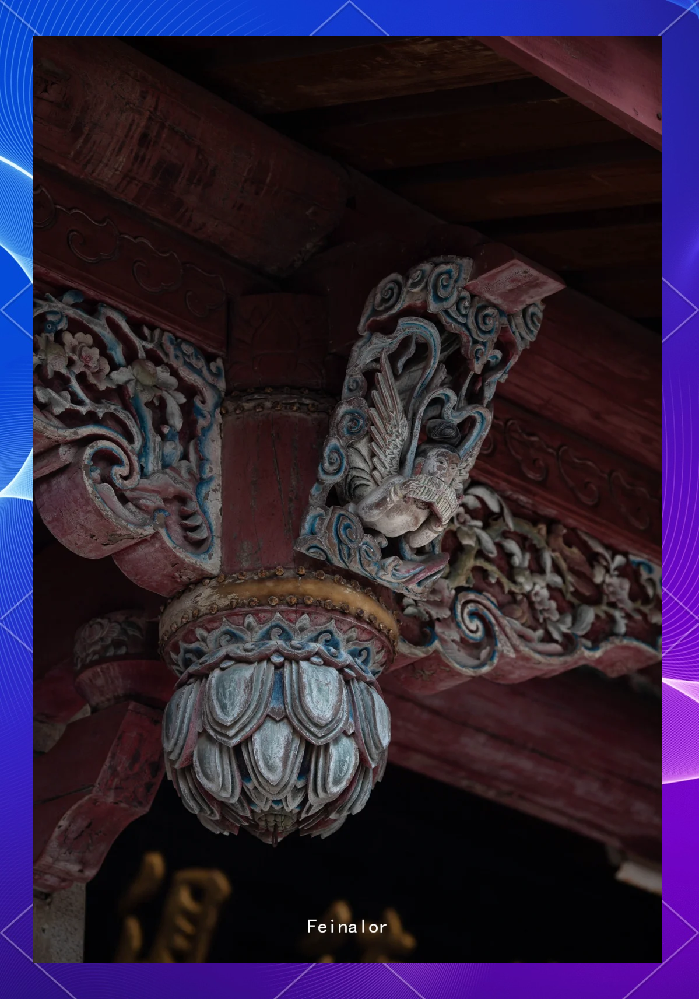
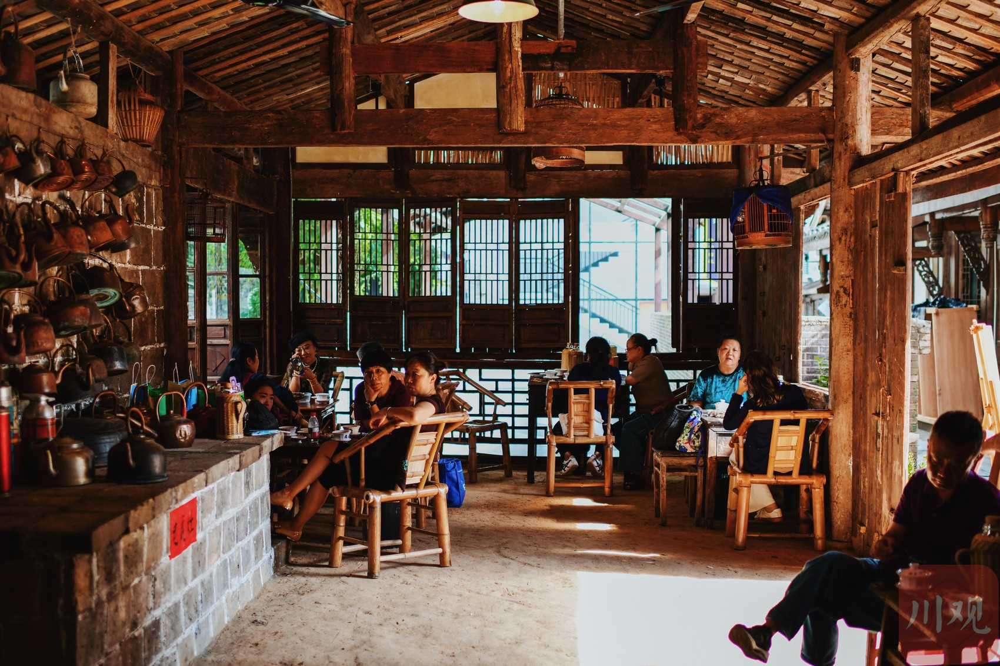

玩家须知
适龄与人数
16周岁以上玩家可参与；推荐人数 5-7 人/场。
请你准备
提前 10 分钟到场，调整状态。设备充电、保持安静。
沉浸约定
仅以角色讲话，不透露本人信息；不探讨现实生活话题。
"堂下何人，为何喧嚣啊？"
"大人，就是这个毒妇偷了我的南瓜！"
"草民冤枉啊！"
"快去看看……"
古镇雨夜，一桩"偷瓜"疑案闹上公堂。邻里反目，各执一词，小小南瓜竟成是非关键。公堂之上，你将如何剥丝抽茧，撕开这场谎言的破绽？
点击进入"密令一出，三日必至！可这密令，今日竟不翼而飞……"
一封事关沿线商旅平安与地方秩序的"走马驿密令"在古镇内离奇失踪。茶馆掌柜、马帮镖头、外乡书生，每一个人都有秘密。你愿做执令者，还是放令者？
敬请期待"走马说书大会"在即，古镇却接连出现奇怪的失踪案……
你是"古镇守护者"，必将守护大会圆满开展，打击一切宵小！木雕、说书、戏楼、茶肆——非遗背后藏着怎样的迷局？由你来揭开。
敬请期待What Makes Us Different
以古镇驿道、关武庙戏楼、茶馆、孙家大院为原型，场景一砖一瓦不马虎。

走马民间故事、木雕、茶馆说书一同入剧，在推理中感受传统。
历史与现实交织推进，每一个选择都会改变最终结局，多重结局反复可玩。

资深DM化身走马驿丞，全程引导，让你真正跳进古镇的雨夜。
How To Join
选择你感兴趣的剧本，阅读背景与难度说明。
点击"预约入口"选择场次与人数，生成专属凭证。
提前抽取角色，阅读个人本，熟悉你的身份与使命。
场次开始，进入古镇场景，DM引领你带入沉浸。
调查、盘问、交锋、投票，一步步接近真相。
真相揭晓，本场与多重结局、彩蛋一同释放。
16周岁以上玩家可参与；推荐人数 5-7 人/场。
提前 10 分钟到场，调整状态。设备充电、保持安静。
仅以角色讲话，不透露本人信息；不探讨现实生活话题。